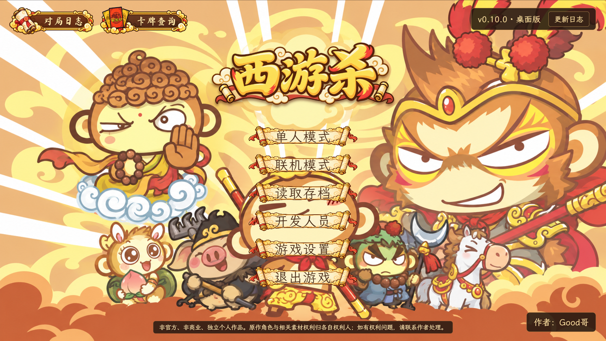
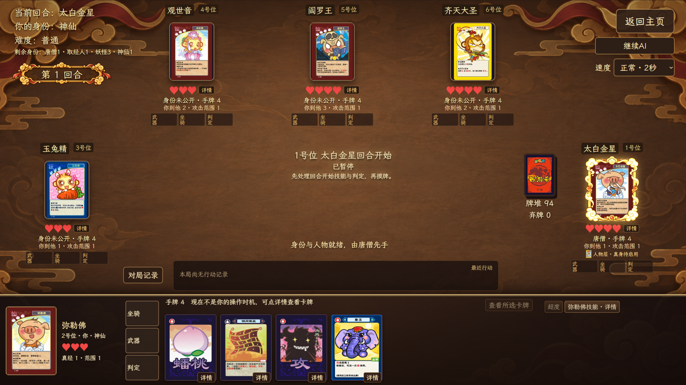
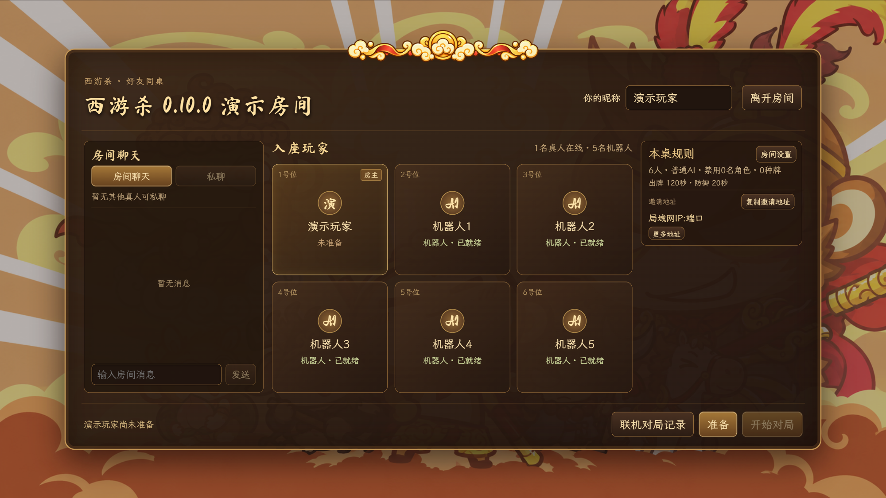
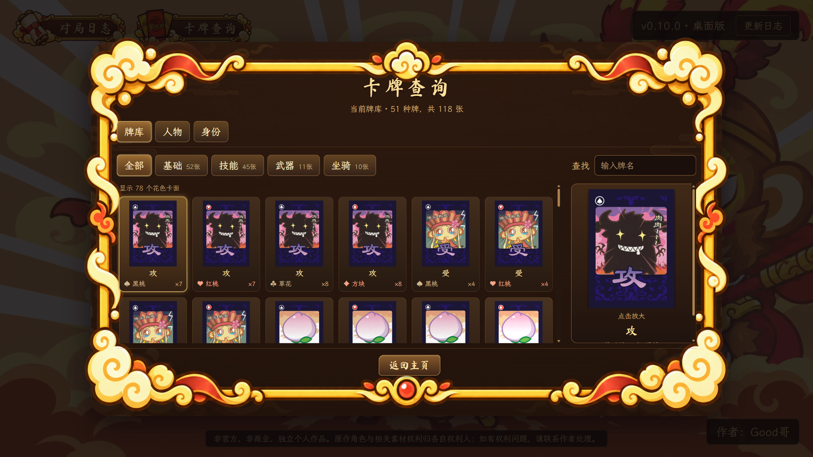
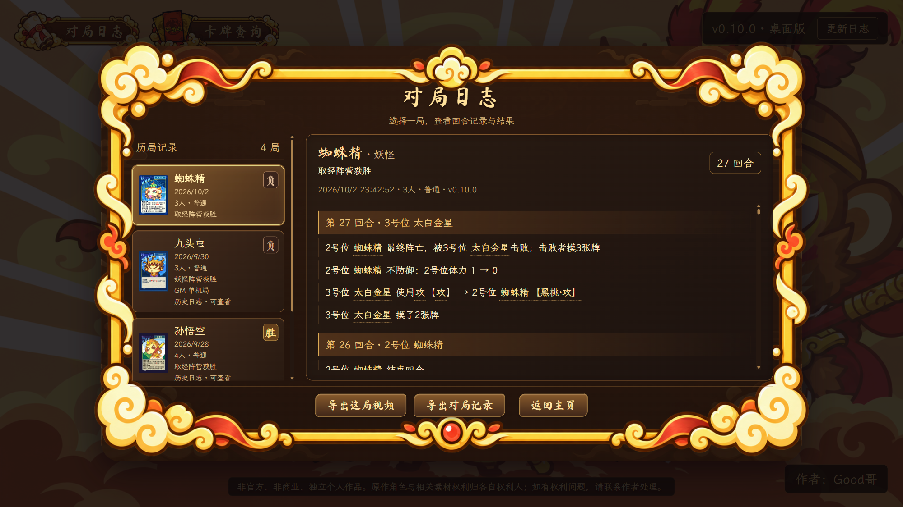
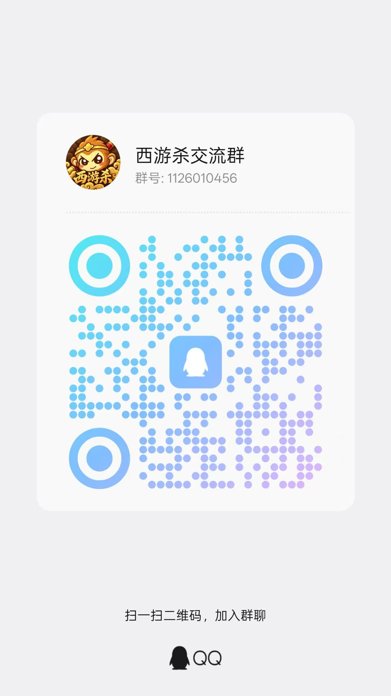

一桌好友 · 一路西游
桌面版
扮一位西游人物，藏一重阵营身份。独自磨炼牌技，或与朋友同桌过招。
正式发布版查看本版更新 →
Jd1Z

玩法与画面
抽身份、选人物、用手牌与技能，走完你这一局的西游之路。
唐僧、取经人、妖怪、神仙各有胜利条件。除了唐僧，其他身份在阵亡前保持隐藏。
单人可选三档 AI 难度；局域网房间支持真人与 AI 混合、房间配置、聊天与掉线接管。
随时查询卡牌与人物，保存对局、查看记录。已结束的对局可以回放并导出视频。




每一程，都有新变化
点开一个版本，查看完整改动与下载入口。
正在读取发布记录…
请前往 GitHub 发布页查看所有版本；夸克网盘也提供各版本安装包，提取码 Jd1Z。
西游路上，一起同行
交流玩法、反馈问题，或找朋友约一局。
西游杀 QQ 交流群
搜索群号，或使用 QQ 扫码加入。
